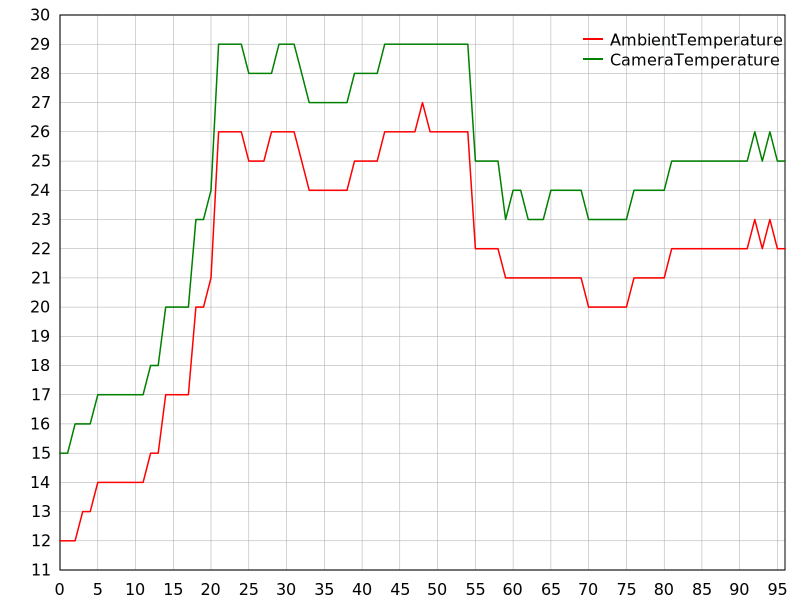
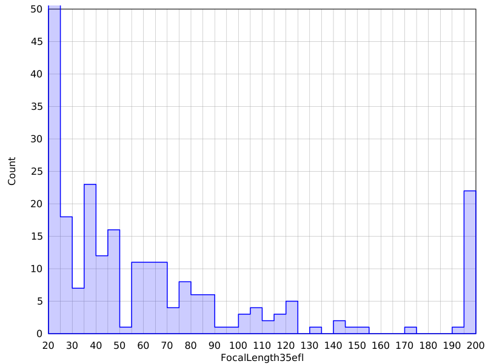
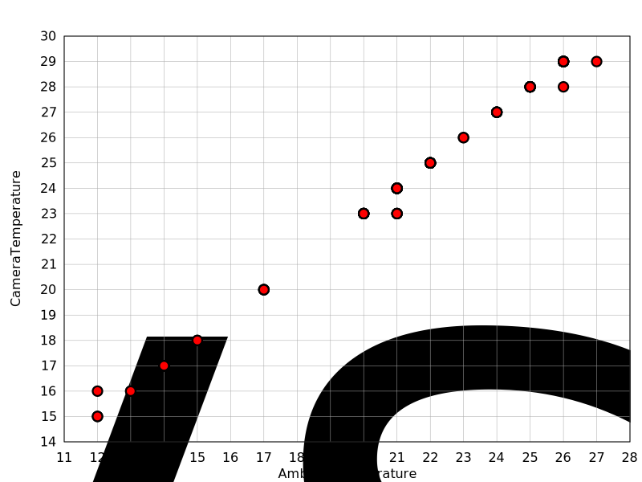
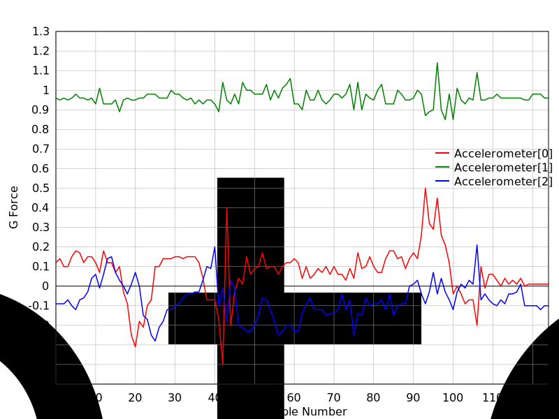

The -plot option of the exiftool application is used to generate
SVG-format output plot files from the values of tags. This feature has many uses,
including plotting timed metadata when combined with the -ee
(ExtractEmbedded) option, and plotting values of one or more tags across a set of
images.
Any tag with a numerical value may be plotted, including strings and lists of numbers.
Up to 20 datasets (eg. tags) may be plotted together in the same plot, except for
histogram plots which are limited to only one (but the Multi setting may be
used to draw multiple plots at once). Attempting to plot too many tags at once will result
in a warning and the extra datasets will be ignored. The X and Y scales are common to
all datasets within each plot (ie. multiple datasets in a single plot all use the same
scales).
The plot may be viewed by opening the SVG file in your favourite web browser or SVG-aware image viewer. Most modern web browsers support display of SVG images.
Three basic plot types are provided: Line, Scatter and Histogram. Examples of each are given in the Examples section below.
Plot settings are changed via the API Plot option. Multiple options may be set at the same time either by stringing them together in a comma-separated list, or through multiple API Plot options.
The syntax for each setting is NAME=VALUE. Case is not
significant for setting names. Using NAME= without a value sets the
value to undef. Using NAME alone sets the value to 1. For
example, to set the plot title and color for the first data line, a command could be:
exiftool -plot -api plot="title=some title,cols=pink" ...
ExifTool Plot Settings Name Description Value Default Type Type of plot 'Line', 'Scatter' or 'Histogram' 1 'Line' Style Style of plot data points String of names: 2,3 'Line', 'Marker' and/or 'Fill' 'Line+Fill' for Histogram plots, or 'Line' otherwise Title Title of the plot Any string 4 '' (auto-generated) 5 XLabel X-axis label string Any string 4 '' (auto-generated) 5 YLabel Y-axis label string Any string 4 '' (auto-generated) 5 XMin, XMax X-axis minimum and maximum for Scatter and Histogram plot types A number undef (autoscaling) YMin, YMax Y-axis minimum and maximum (the YMin setting does not apply to Histogram plots) A number undef (autoscaling) NBins Number of bins for histogram plot A number '20' Multi Flag to draw multiple plots, one for each dataset Number of plots per row in output image 6 undef Split Split strings of numbers into separate datasets Number of datasets, or 1 to split all 7 undef Size Width and height of output image String of 2 numbers 2 '800 600' Margin Left, right, top, bottom margins around plotting area String of 4 numbers 2 '60 15 15 30' Legend X and Y shift of legend from default location String of 2 numbers 2 '0 0' TxtPad Padding between text and X/Y scales String of 2 numbers 2 '10 10' LineSpacing Text line spacing A number '20' Stroke Scaling factor for plot stroke width and marker size A number '1' Marks Marker characteristics for each dataset String of marker names (or 'none') with optional fill style, color and opacity 2,8 'circle square triangle diamond star plus pentagon left down right' Cols Colors of plot lines/markers for each dataset String of SVG color codes or 'none' for no line or marker border 2 'red green blue black orange gray fuchsia brown turquoise gold' Grid Grid color SVG color code 'darkgray' Text Color of text and plot border SVG color code 'black' Bkg Background color SVG color code or undef undef (transparent)
Notes:
1 The scatter plot uses the first specified tag as the X coordinate and the remaining tags as the datasets for the Y values. 2 Strings of names or numbers may use whitespace, slash ( /) or a plus sign (+) as a delimiter. The numbers themselves should not contain a plus sign. Numbers may also use 'x' as a delimiter (eg. 'size=320x200').3 The Fillstyle applies only for theHistogramplot style, or whenMarkerstyle is also used. WithoutFill, histogram bars and markers are hollow.LineandMarkermay also be used together (eg. 'Style=Line+Marker'). For brevity, only the first letter of each setting is required (eg. 'Style=L+M').4 Commas in labels must be escaped as either ' ,' or ','. No other characters require escaping, but other XML numeric character references may be used.5 The auto-generation of labels applies only in limited situations, and may be disabled with NAME=.6 Multiple plots are drawn together in the same SVG image with the specified number of columns within the width of the output image. The image height is adjusted to fit the required number of rows. The X axes of all plots are the same, but the Y axes are independent. May be followed by the number of datasets for each plot, using any separator. For example, ' Multi=1.3.3' draws the plots in a single column, with 3 datasets each in the first and second plots. Example 5 shows a simple usage.7 For example, if a tag contains a set of N accelerometer readings, each composed of 3 values (X, Y and Z directions), then these could be plotted as 3 separate datasets by setting Split=3. See example 4 for a demonstration of theSplitsetting.8 A value of 'none' may be used to override the plot StyleMarkersetting to disable marks for a specific dataset. For brevity, only the first letter of the marker name is required, except for 'star', 'pentagon', and 'down' which require 2 letters to distinguish them from 'square', 'plus' and 'diamond' respectively. An optional fill style, color and opacity may be appended to the marker name, separated by dashes. The fill style overrides the plotStyleFillsetting for the specific dataset, and may be 'Fill' (or just 'F') for filled markers, or 'none' for hollow markers. Filled markers may also specify a fill color and opacity (ranging from 1 to 100 percent). For example, to use a right-pointing triangle for dataset 1, and the default marker with solid black fill for dataset 3: 'marks=r++-f-black-100'. The default opacity for marker and histogram fill is 20% if they have a border, or 50% otherwise.
The first example plots AmbientTemperature and CameraTemperature from a set of
images in a directory. The -fileOrder option is used to order the
files (and hence the data points) chronologically. Here is the command that was used:
exiftool C:/pics "-*temperature" -plot -fileorder createdate > plot1.svg
And this is the resulting SVG plot (plot1.svg):

This example shows a histogram of the number of pictures taken at different
focal lengths for a set of images. It also demonstrates the use of the
API Plot option to change various plot settings.
The YMax setting was used to limit the Y scale because otherwise the
effect of the autoscaling with the tall 20-25 mm bar would have made the other bars
too small. With this rescaling, the 20-25 mm bar extends off the top of the plot.
The default histogram plot Style is Line+Fill. The fill
is partially transparent, with a default 20% opacity if the Line style is
used, or 50% otherwise, but this may be changed with the Marks setting.
Unlike the other plot types, the histogram type supports plotting of only
a single dataset (ie. only the first tag specified on the command line is used
unless the Multi plot setting is used to generate multiple plots).
The -w option was used to write the output file
(plot2.svg) instead of using shell redirection. Note that when the -plot
option is used, the -w option takes a full file name instead of
just an extension.
exiftool C:/my_trip -focallength35efl# -w plot2.svg \ -api plot="type=hist,nbins=40,ymax=50,cols=blue"

This example uses the same data set as example 1, but using the Scatter
plot type to show the correlation betweent CameraTemperature and AmbientTemperature.
The first tag specified on the command line is the independent variable (plotted
along the X axis), and the rest are the dependent variables (Y axis). Note that
the legend doesn't appear in this plot because there is only one dependent
variable, so instead the Y-axis is labelled with its name.
The plot Style
has been changed to Marker to show markers for the data points
instead of connecting them with lines, and Fill has been added to
show filled markers instead of outlines. The fill is partially transparent with a
default opacity of 20%, but this has been changed to 10% via the Marks
setting so points which occur few times in the dataset will show a noticably lighter
color.
exiftool C:/pics -w plot3.svg "-*temperature" -plot \ -api plot="type=scatter,style=marker+fill,stroke=1.5,marks=---10"

To plot timed accelerometer readings from a video where the Accelerometer values are
strings of numbers, the Split setting of the
API Plot option must be used to split the values into
separate lines in the plot. Here is an example of the first Accelerometer value in the
file:
> exiftool test.mp4 -ee -accelerometer -s2 --a Accelerometer: +0.12 +0.96 -0.09
And this command was used to generate the following plot:
exiftool test.mp4 -w plot4.svg -ee -accelerometer -plot -api plot="split,legend=30 107" \ -api plot="title=Accelerometer Readings,ylabel=G Force,xlabel=Sample Number"

This example demonstrates the Multi setting to draw multiple
Histogram plots in 2 columns. The API Filter
option is used to convert shutter speed from a value like 1/640 to 640 so the denominator
of the value is plotted.
exiftool C:\my_trip -w! plot5.svg -fnumber -focallength35efl# -shutterspeed -iso -plot \ -api filter="s(1/)()" -api plot="multi=2,type=hist,style=fill,cols=green,ylabel="